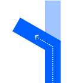
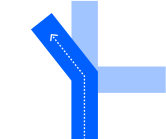
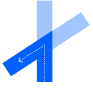
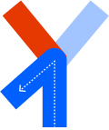
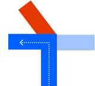
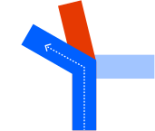
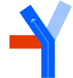
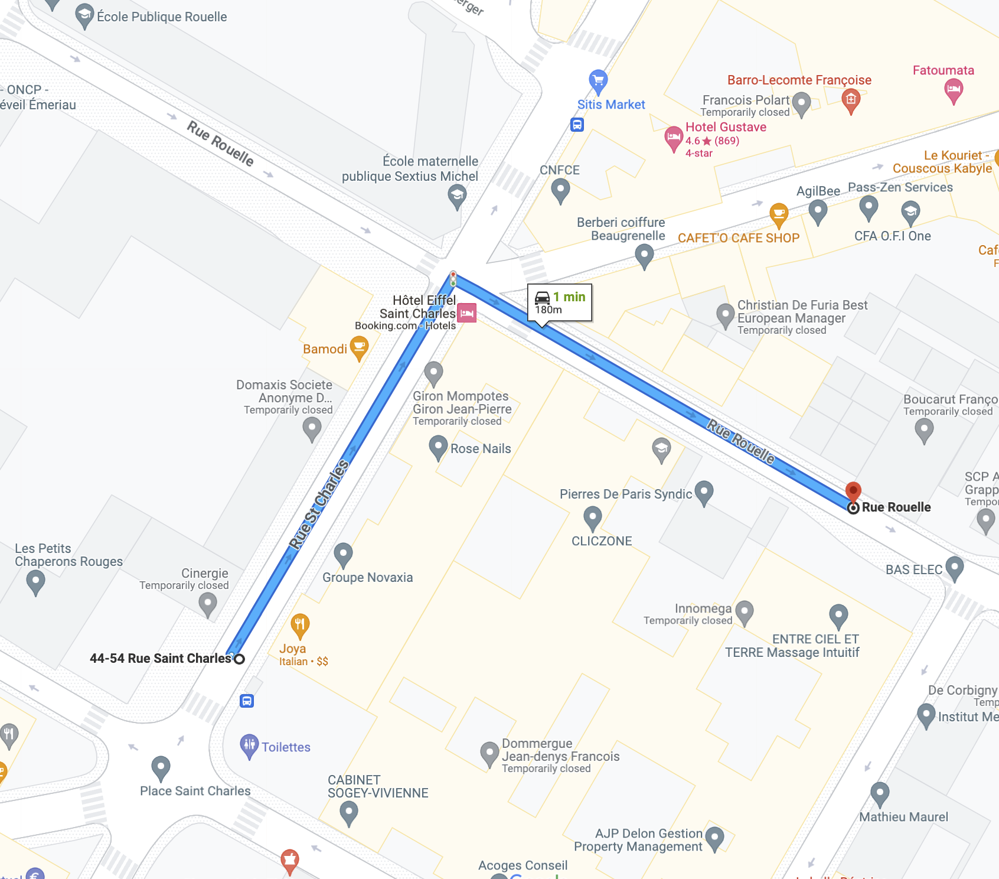
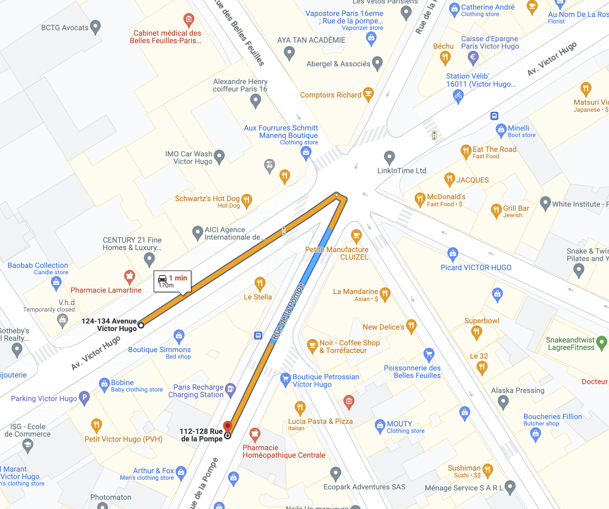

See Angles Quantisation
See Angles Quantisation

See Angles Quantisation
See Angles Quantisation
| Interaction Designer | Alexey Opokin |
|---|---|
| Visual Designer | Georgios Koultouridis |
| PM | Joost Pennings |
| ENG. OWNER | TBD |
[!NOTE] DICLAIMER
The document below is covering user experience and general guidelines for technical implementation. It doesn't define exact methods for achieving this user experience, algorithms and heuristics - those has to be described at separate technical documentation on GitHub and managed by engineering owner.[!NOTE] As of today 14 Aug 2024 the functionality described here is not implemented
At intersections where roads intersect at angles significantly different from straight angles, it makes sense to communicate turn angles to the driver. This is especially critical in ambiguous situations when there are alternative outcomes in the same direction present. There are two types of such deviations: Shallow turns (also known as Bear) and Sharp turns. There are also two types of scenarios:
Those scenarios have to be defined separately.
This table provides examples of turns with single possible outcome. The usage of sharp or bear attribute is dictated entirely by the angle of the turn and quantisation rules defined here Angles Quantisation It is important to note that the angle of the turn provided by the map is not reliable, due to quantisation errors of road segments, therefore we use quite aggressive angle threshold for sharp turn to eliminate false calls.
| Road Geometry | Manoeuvre arrow | Instruction | Notes |
|---|---|---|---|
|
Turn Right | A normal turn is used if the angle of the turn quantised to 90° See Angles Quantisation |
|
|  | Turn Left | Even though, the turn is different from 90°, it is still quantised to 90° See Angles Quantisation |
|
|  | |
Turn sharply left | This turn angle is quantised to -150° which is a sharp turn. See Angles Quantisation |
|  | Bear Left | This turn angle is quantised to -30° which is a sharp turn. See Angles Quantisation |
In order to to disambiguate multiple possible turns in the same direction we use comparative argument sharper. In this table we describe use cases of such sharper turn usage. Important to note: here the sharper attribute is not dictated by the angle alone but rather by the presence of alternative outcome.
| Road Geometry | Manoeuvre Arrow | Instruction | Notes |
|---|---|---|---|
|  | Take the sharper turn left | To disambiguate this manoeuvre we apply sharper attribute to a blue outcome. sharper attribute here is not indicating the absolute angle, but rather points to a relative value. | |
|  | Take the sharper turn left | To disambiguate this manoeuvre we apply sharper attribute to a blue outcome, even though, it is technically, in the range of angles for the normal turn. sharper attribute here is not indicating the absolute angle, but rather points to a relative value. In other words it is saying: this turn is sharper than alternative (red outcome). Manoeuvre arrow representing turn is not identical to the road geometry because it is quantised using quantisation logic described here: Angles Quantisation |
|
|  | Take the sharper turn left | To disambiguate this manoeuvre we apply sharper attribute to a blue outcome, even though, it is technically, in the range of angles for the shallow turn. sharper attribute here is not indicating the absolute angle, but rather points to a relative value. | |
|  | Take the left turn, the gentler one | To disambiguate this manoeuvre we apply gentler attribute to a blue outcome. Genlter attribute here is not indicating the absolute angle, but rather points to a relative value. |
===
| Intersection geometry | Driver view | NIP arrow | Audio | Location |
|---|---|---|---|---|
|  |  |
...Take the sharper right to street name | 48.849978, 2.288525 | |
 |
|
 |
... Take the right turn, the gentler one, to street name | 48.849978, 2.288525 |
|  |  |
...take the sharper right to street name | 48.867842, 2.281052 |